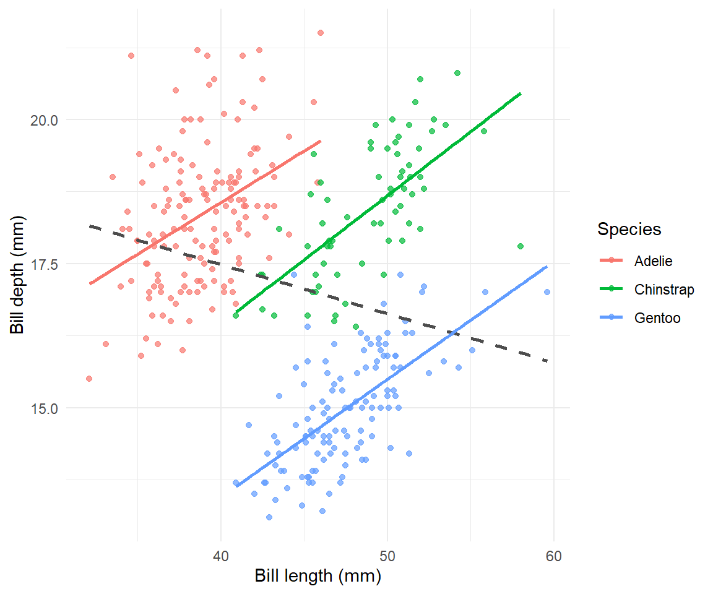

Intro to the Tidyverse
The tidyverse is a collection of packages for data science that share a philosophy, a grammar and a set of data structures.2 Install it once, load it once per session, and you have readr for reading data, dplyr for reshaping it, ggplot2 for drawing it, and a dozen more.
Loading it prints a short report of which packages came along and which base R functions they have replaced. That is not an error message; it is a receipt.
Meet the penguins
Learning a grammar needs something to talk about, and for the rest of this section it will be 344 penguins.

Figure 0.2: The three species in the data. Artwork by @allison_horst.
Between 2007 and 2009, Dr Kristen Gorman measured Adélie, Chinstrap and Gentoo penguins on three islands of the Palmer Archipelago in Antarctica — Biscoe, Dream and Torgersen — as part of the Palmer Station Long Term Ecological Research programme. For each bird she recorded the length and depth of the bill, the length of the flipper, body mass, sex and year.
Allison Horst, Alison Hill and Kristen Gorman packaged those measurements as palmerpenguins so that people could learn data analysis on something real, small and charming.3
penguins
#> # A tibble: 344 × 8
#> species island bill_length_mm bill_depth_mm flipper_length_mm body_mass_g
#> <fct> <fct> <dbl> <dbl> <int> <int>
#> 1 Adelie Torgersen 39.1 18.7 181 3750
#> 2 Adelie Torgersen 39.5 17.4 186 3800
#> 3 Adelie Torgersen 40.3 18 195 3250
#> 4 Adelie Torgersen NA NA NA NA
#> 5 Adelie Torgersen 36.7 19.3 193 3450
#> 6 Adelie Torgersen 39.3 20.6 190 3650
#> 7 Adelie Torgersen 38.9 17.8 181 3625
#> 8 Adelie Torgersen 39.2 19.6 195 4675
#> 9 Adelie Torgersen 34.1 18.1 193 3475
#> 10 Adelie Torgersen 42 20.2 190 4250
#> # ℹ 334 more rows
#> # ℹ 2 more variables: sex <fct>, year <int>Two columns need a picture. The bill length runs along the bill; the bill depth is measured across it, at the base. In the original field data both are called culmen measurements, after the ridge along the top of a bird's bill.

Figure 0.3: Bill dimensions. Artwork by @allison_horst.
Amazing Fact
Since version 4.5.0, released in 2025, a version of the penguin data ships with R itself — no package required. It sits in the datasets package next to iris and mtcars, with slightly shorter column names (bill_len instead of bill_length_mm, and so on).
Very few data sets are ever promoted into base R. Teaching material about penguins turned out to be more popular than the flowers a statistician measured in 1936.
Reading data with readr
Data usually arrive as a file. read_csv() from readr reads one.
csv_file <- path_to_file("penguins.csv") # a real .csv shipped with the package
penguins_csv <- read_csv(csv_file)
penguins_csv
#> # A tibble: 344 × 8
#> species island bill_length_mm bill_depth_mm flipper_length_mm body_mass_g
#> <chr> <chr> <dbl> <dbl> <dbl> <dbl>
#> 1 Adelie Torgersen 39.1 18.7 181 3750
#> 2 Adelie Torgersen 39.5 17.4 186 3800
#> 3 Adelie Torgersen 40.3 18 195 3250
#> 4 Adelie Torgersen NA NA NA NA
#> 5 Adelie Torgersen 36.7 19.3 193 3450
#> 6 Adelie Torgersen 39.3 20.6 190 3650
#> 7 Adelie Torgersen 38.9 17.8 181 3625
#> 8 Adelie Torgersen 39.2 19.6 195 4675
#> 9 Adelie Torgersen 34.1 18.1 193 3475
#> 10 Adelie Torgersen 42 20.2 190 4250
#> # ℹ 334 more rows
#> # ℹ 2 more variables: sex <chr>, year <dbl>Two things happened. read_csv() guessed a type for every column and reported it, and the result printed as a tibble: the first ten rows, the columns that fit the screen, the dimensions on top, the type under each name.
Base R's read.csv() does the same job and returns a plain data frame — which, printed, dumps all 344 rows into your console.
penguins_df <- read.csv(csv_file)
penguins_df # all 344 rows, no types, no mercy
head(penguins_df) # so you need head() to lookReading
Tibbles differ from data frames in three ways: printing, subsetting and recycling rules. The tibble vignette explains each of them with examples.
The verbs of dplyr
dplyr gives you a small set of verbs. Each one takes a data frame, does exactly one thing, and returns a data frame. Most data preparation is these verbs in some order.
| Verb | Question it answers |
|---|---|
glimpse() |
What is in here? |
select() |
Which columns? |
filter() |
Which rows? |
arrange() |
In which order? |
mutate() |
What new column can I compute? |
summarise() |
What is the summary number? |
group_by() |
... and per group? |
Glimpse
glimpse() turns the table on its side so that every variable gets one line: its name, its type, and its first values.
glimpse(penguins)
#> Rows: 344
#> Columns: 8
#> $ species <fct> Adelie, Adelie, Adelie, Adelie, Adelie, Adelie, Adel…
#> $ island <fct> Torgersen, Torgersen, Torgersen, Torgersen, Torgerse…
#> $ bill_length_mm <dbl> 39.1, 39.5, 40.3, NA, 36.7, 39.3, 38.9, 39.2, 34.1, …
#> $ bill_depth_mm <dbl> 18.7, 17.4, 18.0, NA, 19.3, 20.6, 17.8, 19.6, 18.1, …
#> $ flipper_length_mm <int> 181, 186, 195, NA, 193, 190, 181, 195, 193, 190, 186…
#> $ body_mass_g <int> 3750, 3800, 3250, NA, 3450, 3650, 3625, 4675, 3475, …
#> $ sex <fct> male, female, female, NA, female, male, female, male…
#> $ year <int> 2007, 2007, 2007, 2007, 2007, 2007, 2007, 2007, 2007…Types are abbreviated: fct factor, dbl double (a number with decimals), int integer — elsewhere you will also meet chr for text and lgl for TRUE/FALSE. Note the NAs in sex — real data has holes in it.
Select
Columns, by name.
select(penguins, species, island, body_mass_g)
#> # A tibble: 344 × 3
#> species island body_mass_g
#> <fct> <fct> <int>
#> 1 Adelie Torgersen 3750
#> 2 Adelie Torgersen 3800
#> 3 Adelie Torgersen 3250
#> 4 Adelie Torgersen NA
#> 5 Adelie Torgersen 3450
#> 6 Adelie Torgersen 3650
#> 7 Adelie Torgersen 3625
#> 8 Adelie Torgersen 4675
#> 9 Adelie Torgersen 3475
#> 10 Adelie Torgersen 4250
#> # ℹ 334 more rowsA minus sign drops instead of keeps, and helpers such as starts_with() save typing.
The pipe
Verbs become useful when they are chained. Nesting them is possible, and quickly unreadable:
The pipe %>% takes what is on its left and hands it to the function on its right as the first argument. Read it as "and then".
penguins %>% # take the penguins
filter(species == "Gentoo") %>% # and then keep the Gentoos
select(species, body_mass_g) %>% # and then these two columns
arrange(body_mass_g) # and then sort by mass
#> # A tibble: 124 × 2
#> species body_mass_g
#> <fct> <int>
#> 1 Gentoo 3950
#> 2 Gentoo 4100
#> 3 Gentoo 4150
#> 4 Gentoo 4200
#> 5 Gentoo 4200
#> 6 Gentoo 4200
#> 7 Gentoo 4300
#> 8 Gentoo 4300
#> 9 Gentoo 4350
#> 10 Gentoo 4375
#> # ℹ 114 more rowsSame result, and it reads in the order the work actually happens. In RStudio, Ctrl + Shift + M types the pipe.
Truly Dedicated
Since R 4.1 the language has its own pipe, |>, which needs no package at all:
The two behave the same in ordinary chains. %>% (from magrittr, loaded with the tidyverse) can additionally place the incoming data anywhere with a dot, ., and it works in older versions of R. Books and courses are gradually moving to |>. Either is fine; mixing them in the same script is not.
Filter
filter() keeps rows for which a condition is TRUE. Conditions are built from relational operators.
Definition
Relational operators
==equal to,!=not equal to>greater than,<less than,>=,<=%in%contained in a set
Logical operators combine them: & and, | or, ! not.
penguins %>% filter(body_mass_g > 6000)
#> # A tibble: 2 × 8
#> species island bill_length_mm bill_depth_mm flipper_length_mm body_mass_g
#> <fct> <fct> <dbl> <dbl> <int> <int>
#> 1 Gentoo Biscoe 49.2 15.2 221 6300
#> 2 Gentoo Biscoe 59.6 17 230 6050
#> # ℹ 2 more variables: sex <fct>, year <int>penguins %>%
filter(species == "Adelie" & island == "Torgersen" & sex == "female")
#> # A tibble: 24 × 8
#> species island bill_length_mm bill_depth_mm flipper_length_mm body_mass_g
#> <fct> <fct> <dbl> <dbl> <int> <int>
#> 1 Adelie Torgersen 39.5 17.4 186 3800
#> 2 Adelie Torgersen 40.3 18 195 3250
#> 3 Adelie Torgersen 36.7 19.3 193 3450
#> 4 Adelie Torgersen 38.9 17.8 181 3625
#> 5 Adelie Torgersen 41.1 17.6 182 3200
#> 6 Adelie Torgersen 36.6 17.8 185 3700
#> 7 Adelie Torgersen 38.7 19 195 3450
#> 8 Adelie Torgersen 34.4 18.4 184 3325
#> 9 Adelie Torgersen 35.9 16.6 190 3050
#> 10 Adelie Torgersen 33.5 19 190 3600
#> # ℹ 14 more rows
#> # ℹ 2 more variables: sex <fct>, year <int>The single = is assignment; the double == is a question. Confusing them is a rite of passage.
Mutate
mutate() adds a column, computed from the ones already there.
penguins %>%
mutate(body_mass_kg = body_mass_g / 1000,
bill_ratio = bill_length_mm / bill_depth_mm) %>%
select(species, body_mass_kg, bill_ratio)
#> # A tibble: 344 × 3
#> species body_mass_kg bill_ratio
#> <fct> <dbl> <dbl>
#> 1 Adelie 3.75 2.09
#> 2 Adelie 3.8 2.27
#> 3 Adelie 3.25 2.24
#> 4 Adelie NA NA
#> 5 Adelie 3.45 1.90
#> 6 Adelie 3.65 1.91
#> 7 Adelie 3.62 2.19
#> 8 Adelie 4.68 2
#> 9 Adelie 3.48 1.88
#> 10 Adelie 4.25 2.08
#> # ℹ 334 more rowsChanges are not saved unless you assign them. The line below overwrites the object; writing to a new name is often safer while you experiment.
Summarise and group_by
summarise() collapses many rows into one number.
penguins %>%
summarise(n = n(),
mean_mass_g = mean(body_mass_g, na.rm = TRUE))
#> # A tibble: 1 × 2
#> n mean_mass_g
#> <int> <dbl>
#> 1 344 4202.On its own that is rarely what we want. Almost every substantive question is comparative — heavier than what? — and group_by() supplies the what.
penguins %>%
group_by(species) %>%
summarise(n = n(),
mean_mass_g = mean(body_mass_g, na.rm = TRUE),
mean_flipper = mean(flipper_length_mm, na.rm = TRUE))
#> # A tibble: 3 × 4
#> species n mean_mass_g mean_flipper
#> <fct> <int> <dbl> <dbl>
#> 1 Adelie 152 3701. 190.
#> 2 Chinstrap 68 3733. 196.
#> 3 Gentoo 124 5076. 217.Three lines, and the table already tells a story: Gentoos are markedly heavier and longer-finned than the other two. Half of descriptive statistics is group_by() followed by summarise().
Note na.rm = TRUE doing quiet work again. Without it, two penguins with missing measurements would turn every mean into NA.
All of it at once
A pipeline is easy to write and hard to read, because everything happens between the first line and the last. Drag the slider to add one verb at a time and watch what it does to the data — 344 rows becoming six.
penguins| species | island | bill_length_mm | bill_depth_mm | flipper_length_mm | body_mass_g | sex | year |
|---|---|---|---|---|---|---|---|
| Adelie | Torgersen | 39.1 | 18.7 | 181 | 3750 | male | 2007 |
| Adelie | Torgersen | 39.5 | 17.4 | 186 | 3800 | female | 2007 |
| Adelie | Torgersen | 40.3 | 18.0 | 195 | 3250 | female | 2007 |
| Adelie | Torgersen | NA | NA | NA | NA | NA | 2007 |
| Adelie | Torgersen | 36.7 | 19.3 | 193 | 3450 | female | 2007 |
| Adelie | Torgersen | 39.3 | 20.6 | 190 | 3650 | male | 2007 |
344 rows × 8 columns
penguins %>%
filter(!is.na(sex))| species | island | bill_length_mm | bill_depth_mm | flipper_length_mm | body_mass_g | sex | year |
|---|---|---|---|---|---|---|---|
| Adelie | Torgersen | 39.1 | 18.7 | 181 | 3750 | male | 2007 |
| Adelie | Torgersen | 39.5 | 17.4 | 186 | 3800 | female | 2007 |
| Adelie | Torgersen | 40.3 | 18.0 | 195 | 3250 | female | 2007 |
| Adelie | Torgersen | 36.7 | 19.3 | 193 | 3450 | female | 2007 |
| Adelie | Torgersen | 39.3 | 20.6 | 190 | 3650 | male | 2007 |
| Adelie | Torgersen | 38.9 | 17.8 | 181 | 3625 | female | 2007 |
333 rows × 8 columns
penguins %>%
filter(!is.na(sex)) %>%
group_by(species, sex)| species | island | bill_length_mm | bill_depth_mm | flipper_length_mm | body_mass_g | sex | year |
|---|---|---|---|---|---|---|---|
| Adelie | Torgersen | 39.1 | 18.7 | 181 | 3750 | male | 2007 |
| Adelie | Torgersen | 39.5 | 17.4 | 186 | 3800 | female | 2007 |
| Adelie | Torgersen | 40.3 | 18.0 | 195 | 3250 | female | 2007 |
| Adelie | Torgersen | 36.7 | 19.3 | 193 | 3450 | female | 2007 |
| Adelie | Torgersen | 39.3 | 20.6 | 190 | 3650 | male | 2007 |
| Adelie | Torgersen | 38.9 | 17.8 | 181 | 3625 | female | 2007 |
333 rows × 8 columns
penguins %>%
filter(!is.na(sex)) %>%
group_by(species, sex) %>%
summarise(n = n(), mean_mass_g = mean(body_mass_g))| species | sex | n | mean_mass_g |
|---|---|---|---|
| Adelie | female | 73 | 3368.836 |
| Adelie | male | 73 | 4043.493 |
| Chinstrap | female | 34 | 3527.206 |
| Chinstrap | male | 34 | 3938.971 |
| Gentoo | female | 58 | 4679.741 |
| Gentoo | male | 61 | 5484.836 |
6 rows × 4 columns
penguins %>%
filter(!is.na(sex)) %>%
group_by(species, sex) %>%
summarise(n = n(), mean_mass_g = mean(body_mass_g)) %>%
arrange(desc(mean_mass_g))| species | sex | n | mean_mass_g |
|---|---|---|---|
| Gentoo | male | 61 | 5484.836 |
| Gentoo | female | 58 | 4679.741 |
| Adelie | male | 73 | 4043.493 |
| Chinstrap | male | 34 | 3938.971 |
| Chinstrap | female | 34 | 3527.206 |
| Adelie | female | 73 | 3368.836 |
6 rows × 4 columns
Step 1 of 5 — eleven penguins of unrecorded sex leave the table in step 2
That is the shape of most analyses in this book. Restrict, group, summarise, order — and then look.
Your Turn: Ask the penguins a question
This console installs dplyr and palmerpenguins in your browser before it runs, so the first Run takes longer than the earlier boxes — a minute or so on a normal connection. Everything after that is instant.
Which island hosts all three species? Try count(island, species).
Graphs with ggplot2
ggplot2 builds graphics from a grammar: data, a mapping from variables to visual properties, and layers that draw something. Say those three things and the plot follows.
ggplot(data, aes(...))— the data and the mapping: which variable goes on x, on y, on colour, on size.+ geom_point()— a layer. Points, lines, bars, boxes, densities.+ labs(),+ theme_minimal()— labels and everything that is not data.
Layers are added with +, not with the pipe. It is the one seam in the tidyverse where two grammars meet.
A finished ggplot() call is six lines that arrived one at a time. Drag the slider to add them in that order and watch the picture assemble itself.
ggplot(penguins, aes(x = flipper_length_mm, y = body_mass_g))![Step 1 of the plot]()
ggplot(penguins, aes(x = flipper_length_mm, y = body_mass_g)) +
geom_point()![Step 2 of the plot]()
ggplot(penguins, aes(x = flipper_length_mm, y = body_mass_g)) +
geom_point() +
aes(colour = species)![Step 3 of the plot]()
ggplot(penguins, aes(x = flipper_length_mm, y = body_mass_g)) +
geom_point() +
aes(colour = species) +
geom_smooth(method = "lm", se = FALSE)![Step 4 of the plot]()
ggplot(penguins, aes(x = flipper_length_mm, y = body_mass_g)) +
geom_point() +
aes(colour = species) +
geom_smooth(method = "lm", se = FALSE) +
labs(title = "Bigger flippers, heavier penguins",
x = "Flipper length (mm)", y = "Body mass (g)", colour = "Species")![Step 5 of the plot]()
ggplot(penguins, aes(x = flipper_length_mm, y = body_mass_g)) +
geom_point() +
aes(colour = species) +
geom_smooth(method = "lm", se = FALSE) +
labs(title = "Bigger flippers, heavier penguins",
x = "Flipper length (mm)", y = "Body mass (g)", colour = "Species") +
theme_minimal()![Step 6 of the plot]()
Layer 1 of 6 — each layer is drawn on top of the ones before it
Three of those steps are worth pausing on.
Step 1 draws nothing — and still draws something. The axes are there, scaled to the data, because ggplot() was told which variables go where. The canvas knows its dimensions before anything is painted on it.
Step 3 adds no data and no geometry. It maps species to colour, and one cloud becomes three. Nothing about the penguins changed; we only asked the plot to show a variable it had been ignoring.
Step 4 then fits a line per colour, because the grouping introduced in step 3 is still in force. Layers inherit what came before them, which is what makes the grammar compose — and, occasionally, what makes it surprising.
Amazing Fact
Now try the same trick on bill length and bill depth. Overall, penguins with longer bills have shallower bills — a clearly negative relationship. Within each species, the relationship is positive.

Figure 0.4: One negative trend, three positive ones: Simpson's paradox in the wild.
A grouping variable reversed the sign of a relationship. This is Simpson's paradox, and it is the reason a plot is not a decoration on top of an analysis. We meet it properly when we start comparing groups and building models.
Your Turn: Build a plot
Again, the first Run installs ggplot2 and the data in your browser and takes a moment.
Every layer is added with +. Order matters: later layers are drawn on top.
Reading
R for Data Science by Wickham, Çetinkaya-Rundel and Grolemund is the standard reference for everything in this section, free to read online. For graphics specifically, ggplot2: Elegant Graphics for Data Analysis goes from the grammar to the details.
Horst AM, Hill AP, Gorman KB (2020). palmerpenguins: Palmer Archipelago (Antarctica) penguin data. R package version 0.1.0. https://allisonhorst.github.io/palmerpenguins/. Data are released under CC-0 in accordance with the Palmer Station LTER data policy.↩︎